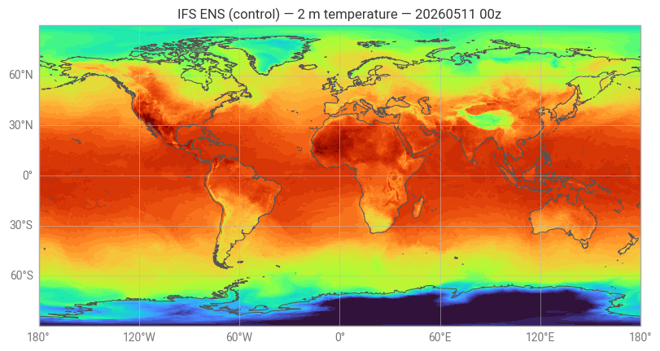
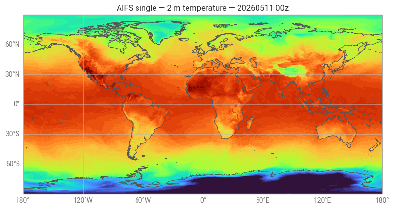
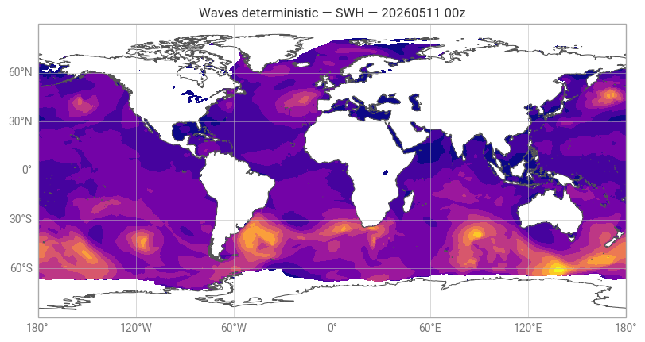
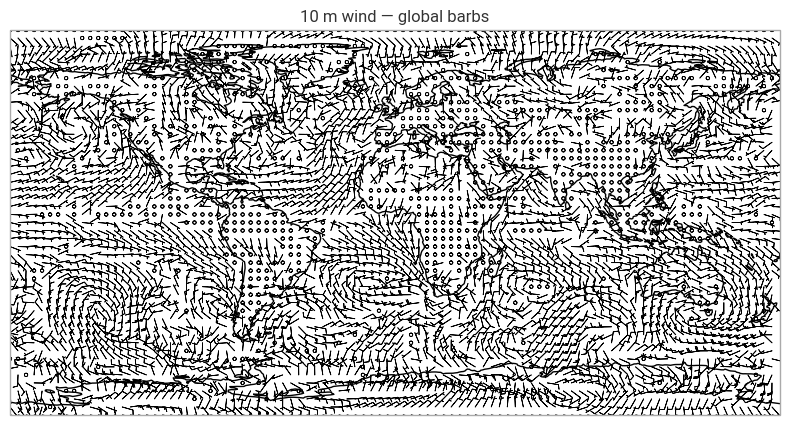
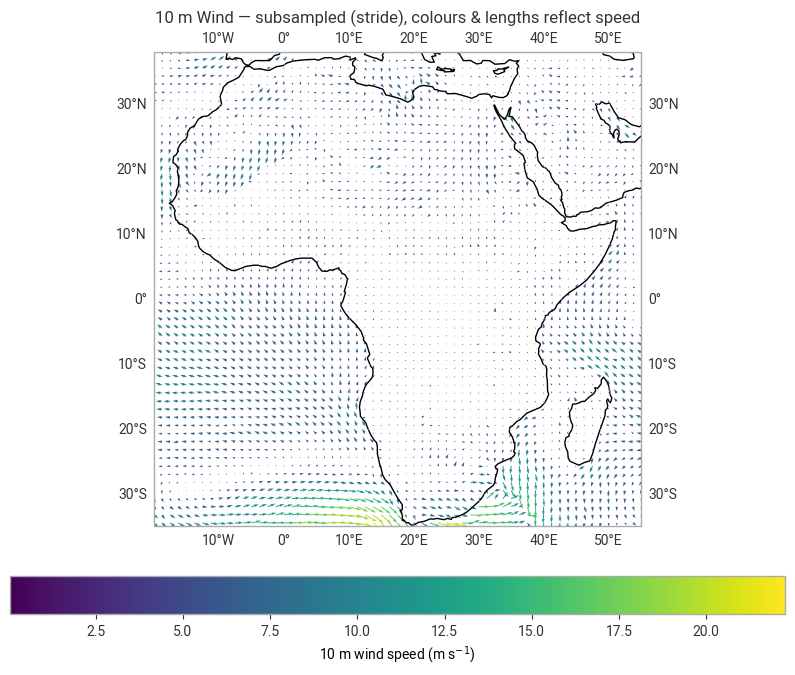
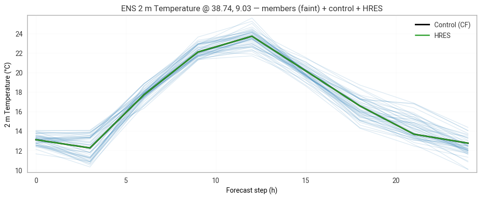
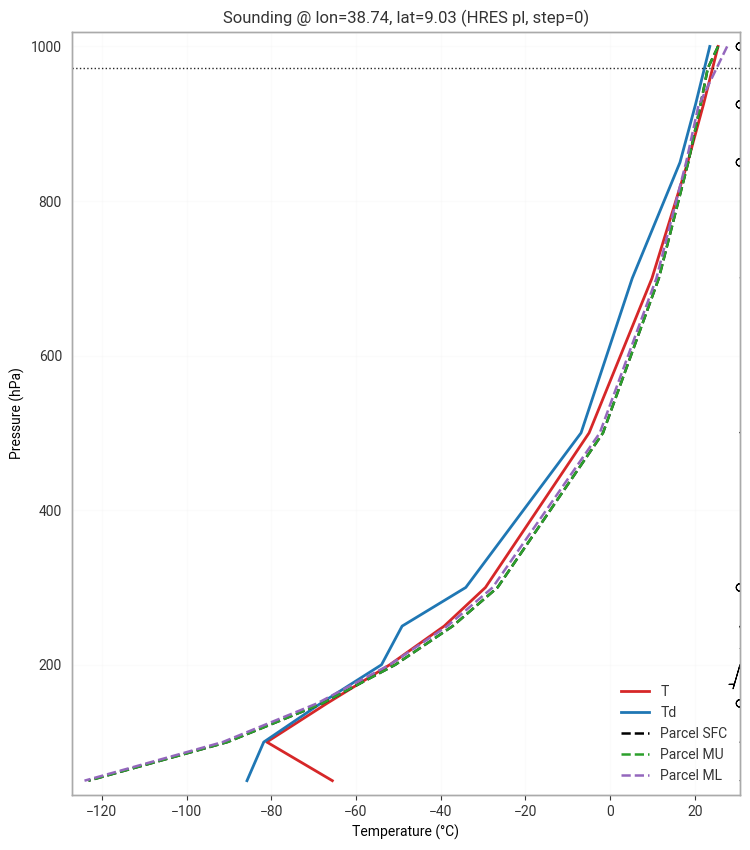
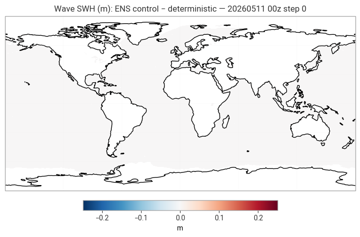
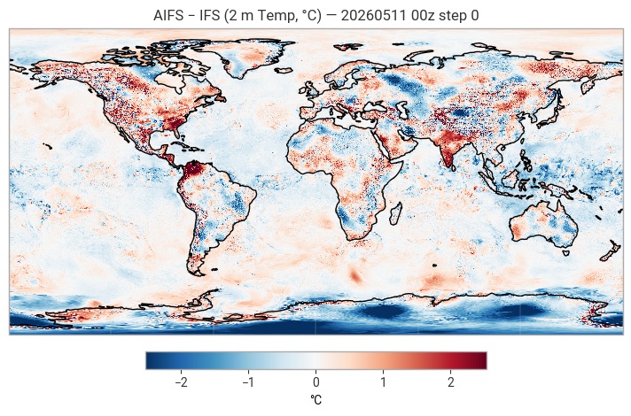
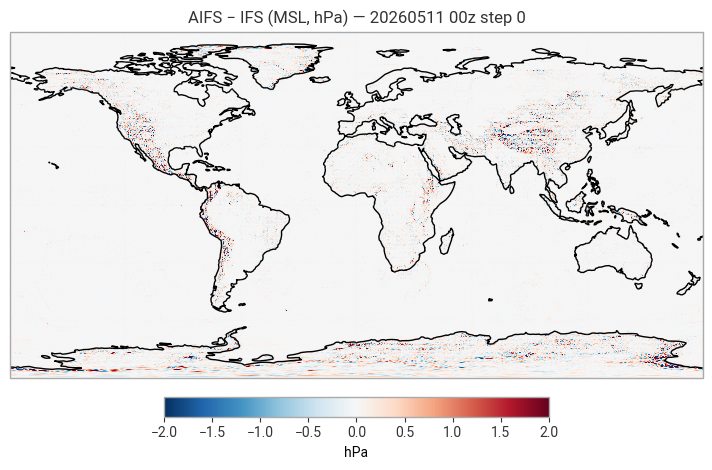

ECMWF Open Data — Retrieval & Plotting with earthkit#
Last updated: 2026-05-09
Learning objectives#
Use the
ecmwf-opendataPython client to fetch IFS, AIFS, and ENS dataCompare IFS and AIFS forecasts for the same field and time
Plot global and regional (Africa) wind vectors and precipitation with earthkit.plots
Build an ENS time-series plot showing member spread vs deterministic
Produce a vertical sounding profile (Skew-T, CAPE/CIN, wind barbs)
Introduction#
This notebook goes beyond single-file downloads.
We fetch a compact but representative set of ECMWF Open Data products and use
earthkit for all reading, processing, and plotting.
Products fetched:
IFS ENS control — surface fields (2t, msl, 10u/v, tp) + pressure levels
AIFS ENS control — same fields for comparison
IFS ENS members — 2t time series for spread analysis
Prerequisites: Notebook A01 recommended first (catalog overview, 50r1 naming)
Run time: ~15 minutes (downloads ~50 MB)
Data: live from data.ecmwf.int — no credentials needed
1. Setup#
We reuse project helpers (_utils.py) and keep everything in a single ./data cache.
from pathlib import Path
from datetime import datetime, timedelta, timezone
import numpy as np
import xarray as xr
import matplotlib.pyplot as plt
import cartopy.crs as ccrs
# ECMWF client + Earthkit
from ecmwf.opendata import Client
import earthkit.data as ekd
import earthkit.plots as ekp
# Project helpers (repo: notebooks/_utils.py or _utils.py)
from _utils import get_data_dir, quick_plot
# Shared cache
DATA_DIR = Path(get_data_dir())
DATA_DIR.mkdir(parents=True, exist_ok=True)
print("Data cache:", DATA_DIR)
print("earthkit-data:", ekd.__version__)
print("earthkit-plots:", getattr(ekp, "__version__", "unknown"))
def reuse(path: Path) -> bool:
"""Return True if non-empty file already exists (and report)."""
if path.exists() and path.stat().st_size > 0:
print(f"↪ Reusing: {path.name} ({path.stat().st_size/1e6:.1f} MB)")
return True
return False
# One ECMWF client (HTTP mirror by default)
c = Client(source="ecmwf")
To ensure the stability of our systems and to preserve resources for our operational activities (network, compute, etc.), access to the open-data portal is limited to 500 simultaneous connections. This limit helps us guarantee reliable service for our operational users, especially during periods of high demand. For added reliability, the open-data is replicated across AWS, Azure, and Google Cloud. If you experience difficulties accessing the portal directly, you can also retrieve the data from these cloud platforms.
Data cache: /Users/valtze/ecmwf-open-data-guide/book/data
earthkit-data: 0.19.4
earthkit-plots: 0.6.1
2. Pick a safe run (later used for all data requests)#
Open Data mirrors publish with a lag, so we pick conservatively like in earlier Notebook 01:
if now ≥ 21 UTC → today 12z
elif now ≥ 9 UTC → today 00z
else → yesterday 12z
We’ll reuse the same run across all requests so plots align.
now = datetime.now(timezone.utc)
if now.hour >= 21:
run_date = now; run_hour = 12
elif now.hour >= 9:
run_date = now; run_hour = 0
else:
run_date = now - timedelta(days=1); run_hour = 12
fc_date = run_date.strftime("%Y%m%d")
fc_time = f"{run_hour:02}"
print(f"Using model run: {fc_date} at {fc_time}z")
Using model run: 20260511 at 00z
3. Preflight & downloads — pick a safe run and cache exactly what we need#
This one cell does all the setup for the rest of the notebook:
Pins a safe IFS run (00z or 12z with a small publish buffer).
If you already definedfc_date/fc_time, those are used. Otherwise we pick a conservative run based on UTC time.Fetches only the files used later, saving to the shared
./datacache:HRES surface bundle —
msl/2t/10u/10v, step 0 →hres_sfcHRES 2t time series — steps 0..24 by 3 h →
hres_tsENS 2t time series — PF + CF, steps 0..24 by 3 h →
ifs_pf_ts,ifs_cf_tsHRES pressure levels —
t/u/v/r, step 0 (for sounding) →hres_plWaves — deterministic (
wave) & ensemble control (waef), step 0 →wave_det,wave_ensAIFS single —
msl/2t, step 0 (for comparisons) →aifs_sfc
Uses a “pin-or-latest” strategy: try the pinned run first; if not yet published, fall back to latest so the lesson still runs.
Performs a light integrity check (opens the first GRIB message) to guard against partial/corrupt downloads; bad files are removed and retried as needed.
Updates
fc_date/fc_timeto the actual run used (after any fallback), so plot titles match the data.Prints a short summary with file sizes (or “missing” if a product isn’t available for that run).
Outputs/variables set
Run info:
fc_date(YYYYMMDD),fc_time(“00” or “12”)Paths to cached files (or
Noneif unavailable):hres_sfc,hres_ts,ifs_pf_ts,ifs_cf_ts,hres_pl,wave_det,wave_ens,aifs_sfc
Re-running this cell is idempotent: existing valid files are reused.
Delete files in./datato force a fresh download.
# === ONE-CELL PREFLIGHT and DOWNLOAD: pick a safe run & get all needed data =================
from pathlib import Path
from datetime import datetime, timedelta, timezone
import earthkit.data as ekd
from ecmwf.opendata import Client
# ---------- 0) Shared cache dir ----------
try:
from _utils import get_data_dir
DATA_DIR = get_data_dir()
except Exception:
DATA_DIR = Path("data"); DATA_DIR.mkdir(parents=True, exist_ok=True)
def _ok(p: Path) -> bool:
try:
p = Path(p)
return p.exists() and p.stat().st_size > 0
except Exception:
return False
def _valid_grib(p: Path) -> bool:
"""Open first message to guard against partial/corrupt files."""
try:
ds = ekd.from_source("file", str(p))
_ = ds[0] # touch first message
return True
except Exception:
try:
p.unlink(missing_ok=True)
except Exception:
pass
return False
# ---------- 1) Safe, conservative run (unless user already set fc_date/fc_time) ----------
if "fc_date" not in globals() or "fc_time" not in globals():
now = datetime.now(timezone.utc)
if now.hour >= 22: run_date, run_hour = now, 12 # today's 12z should be fully online
elif now.hour >= 10: run_date, run_hour = now, 0 # today's 00z
else: run_date, run_hour = now - timedelta(days=1), 12 # yesterday 12z
fc_date = run_date.strftime("%Y%m%d")
fc_time = f"{run_hour:02d}"
print(f"[preflight] target run: {fc_date} {fc_time}z")
def _pin_or_latest(target: Path, **retrieve_kwargs) -> Path | None:
"""Try pinned (fc_date/fc_time), validate; else latest. Returns Path or None."""
cli = Client(source="ecmwf")
target = Path(target)
if _ok(target) and _valid_grib(target):
return target
# 1) pinned
try:
cli.retrieve(**retrieve_kwargs, date=int(fc_date), time=int(fc_time), target=str(target))
if _ok(target) and _valid_grib(target):
return target
except Exception:
pass
# 2) latest
try:
cli.retrieve(**retrieve_kwargs, target=str(target)) # no date/time -> latest
if _ok(target) and _valid_grib(target):
return target
except Exception:
pass
return None
def _extract_run_from_file(path_like) -> tuple[str, str] | None:
"""Return (YYYYMMDD, HH) from file metadata if possible."""
try:
ds = ekd.from_source("file", str(path_like))
d = str(ds[0].metadata("date"))
t = f"{int(ds[0].metadata('time')):02d}"
return d, t
except Exception:
return None
# ---------- 2) Retrieve what later cells need (idempotent, cached) ----------
print("[preflight] downloading/checking…")
# HRES surface bundle (msl/2t/10u/10v), step 0
hres_sfc = _pin_or_latest(
DATA_DIR / "hres_msl_2t_10uv.grib2",
model="ifs", stream="oper", type="fc", levtype="sfc",
step=0, param="msl/2t/10u/10v"
)
# Pin titles to the *actual* run used (after any fallback)
if hres_sfc:
maybe_run = _extract_run_from_file(hres_sfc)
if maybe_run:
fc_date, fc_time = maybe_run
print(f"[preflight] run used: {fc_date} {fc_time}z")
# HRES time series (2t), steps 0..24 by 3h
hres_ts = _pin_or_latest(
DATA_DIR / "hres_ts_2t.grib2",
model="ifs", stream="oper", type="fc", levtype="sfc",
step=list(range(0, 25, 3)), param="2t"
)
# ENS PF time series (2t), steps 0..24 by 3h (kept short to avoid multi-GB)
ifs_pf_ts = _pin_or_latest(
DATA_DIR / "ens_ts_2t_pf.grib2",
model="ifs", stream="enfo", type="pf", levtype="sfc",
step=list(range(0, 25, 3)), param="2t"
)
# ENS CF time series (2t), steps 0..24 by 3h
ifs_cf_ts = _pin_or_latest(
DATA_DIR / "ens_ts_2t_cf.grib2",
model="ifs", stream="enfo", type="cf", levtype="sfc",
step=list(range(0, 25, 3)), param="2t"
)
# HRES pressure levels (t/u/v/r), step 0 — used by the sounding section
hres_pl = _pin_or_latest(
DATA_DIR / "hres_pl_truv_step0.grib2",
model="ifs", stream="oper", type="fc", levtype="pl",
levelist="1000/925/850/700/500/300/250/200/150/100/50",
step=0, param="t/u/v/r"
)
# Waves (deterministic) step 0
wave_det = _pin_or_latest(
DATA_DIR / "wave_deterministic_swh_mwp_mwd.grib2",
model="ifs", stream="wave", type="fc",
step=0, param="swh/mwp/mwd"
)
# Waves (ensemble control) step 0
wave_ens = _pin_or_latest(
DATA_DIR / "wave_ensemble_cf_swh_mwp_mwd.grib2",
model="ifs", stream="waef", type="cf",
step=0, param="swh/mwp/mwd"
)
# AIFS single (msl/2t) step 0 — used in AIFS−IFS differences
try:
aifs_sfc = _pin_or_latest(
DATA_DIR / "aifs_det_msl_2t.grib2",
model="aifs-single", stream="oper", type="fc", levtype="sfc",
step=0, param="msl/2t"
)
except Exception:
aifs_sfc = None
# ---------- 3) Summary ----------
def _size(p):
try:
return f"{Path(p).stat().st_size/1e6:.1f} MB" if _ok(p) else "(missing)"
except Exception:
return "(missing)"
print("\n[preflight] summary")
print(" HRES sfc :", hres_sfc, _size(hres_sfc))
print(" HRES ts (2t) :", hres_ts, _size(hres_ts))
print(" ENS PF ts :", ifs_pf_ts, _size(ifs_pf_ts))
print(" ENS CF ts :", ifs_cf_ts, _size(ifs_cf_ts))
print(" HRES PL :", hres_pl, _size(hres_pl))
print(" Wave det :", wave_det, _size(wave_det))
print(" Wave ens :", wave_ens, _size(wave_ens))
print(" AIFS sfc :", aifs_sfc, _size(aifs_sfc))
Some requested dates are before 2026-05-12. Data before this date uses a different stream structure (06/18 UTC runs are under stream=scda/scwv) compared to data on or after 2026-05-12 (where those runs are under stream=oper/wave). This is handled automatically, but be aware that the underlying file structure differs across this boundary.
[preflight] target run: 20260511 00z
[preflight] downloading/checking…
By downloading data from the ECMWF open data dataset, you agree to the terms: Attribution 4.0 International (CC BY 4.0). Please attribute ECMWF when downloading this data.
[preflight] run used: 20260511 00z
Model 'aifs-single' does not match the client model 'ifs', using model 'aifs-single' from retrieve
[preflight] summary
HRES sfc : /Users/valtze/ecmwf-open-data-guide/book/data/hres_msl_2t_10uv.grib2 2.9 MB
HRES ts (2t) : /Users/valtze/ecmwf-open-data-guide/book/data/hres_ts_2t.grib2 6.0 MB
ENS PF ts : /Users/valtze/ecmwf-open-data-guide/book/data/ens_ts_2t_pf.grib2 303.5 MB
ENS CF ts : /Users/valtze/ecmwf-open-data-guide/book/data/ens_ts_2t_cf.grib2 6.0 MB
HRES PL : /Users/valtze/ecmwf-open-data-guide/book/data/hres_pl_truv_step0.grib2 26.7 MB
Wave det : /Users/valtze/ecmwf-open-data-guide/book/data/wave_deterministic_swh_mwp_mwd.grib2 2.4 MB
Wave ens : /Users/valtze/ecmwf-open-data-guide/book/data/wave_ensemble_cf_swh_mwp_mwd.grib2 2.4 MB
AIFS sfc : /Users/valtze/ecmwf-open-data-guide/book/data/aifs_det_msl_2t.grib2 1.1 MB
4. Inventory (quick check) + tiny sanity maps#
Why this step#
Before we dive into time series, winds, and diagnostics, we do a quick health check of everything the preflight cached. Think of it as a lightweight grib_ls plus a couple of tiny teaser maps to verify that files open cleanly and fields look sensible.
What this cell does#
Prints a compact inventory for each cached GRIB:
file name & size
number of GRIB messages
first few
shortNamevalues (which variables are inside)a brief summary of detected steps (fast scan)
Draws small global maps for a representative scalar from each product:
IFS HRES —
2tIFS ENS (control) —
2tAIFS single —
2tAIFS-ENS (control) —
2t(if present)Waves deterministic —
swhWaves ENS control —
swh
What you should see#
One text inventory block per file and up to six tiny maps.
If a file isn’t available yet, you’ll see “(missing)” and that plot is skipped.
Tips#
This is intentionally quick. Detailed winds, time series, and diagnostics come later.
On slower machines, reduce the internal scan limit (e.g. 300 → 120 messages) inside the inventory helper.
Change the mini-map domain (e.g.
"Europe","USA") or swap the plottedshortNameif you prefer different variables.
# --- Step 4: Inventory (fast) + tiny sanity maps --------------------------------
from pathlib import Path
import numpy as np
import earthkit.data as ekd
from IPython.display import display
# make sure optional vars exist
aifs_ens_cf = globals().get("aifs_ens_cf", None)
ITEMS = [
("IFS HRES (sfc)", hres_sfc),
("IFS HRES 2t time series", hres_ts),
("IFS ENS PF 2t time series", ifs_pf_ts),
("IFS ENS CF 2t time series", ifs_cf_ts),
("IFS HRES pressure levels (pl)", hres_pl),
("Waves deterministic", wave_det),
("Waves ensemble control", wave_ens),
("AIFS single (sfc)", aifs_sfc),
("AIFS-ENS CF (sfc/time series)", aifs_ens_cf),
]
def _ok(p):
try:
p = Path(p)
return p.exists() and p.stat().st_size > 0
except Exception:
return False
def describe_lite(path, max_scan=300):
"""
Fast-ish summary without reading data arrays:
- n messages (len(ds))
- a few shortNames (sampled)
- a compact step summary from first max_scan messages
"""
try:
ds = ekd.from_source("file", str(path))
n = len(ds)
shorts, steps = [], []
for i, f in enumerate(ds):
if i >= max_scan: break
try:
sn = f.metadata("shortName")
if sn: shorts.append(sn)
except Exception:
pass
try:
st = f.metadata("step")
if st is not None: steps.append(int(st))
except Exception:
pass
# compact summaries
shorts_show = ", ".join(sorted(set(shorts))[:8])
if len(set(shorts)) > 8:
shorts_show += ", …"
st_unique = sorted(set(steps))
if len(st_unique) == 0:
step_show = "—"
elif len(st_unique) <= 6:
step_show = ", ".join(map(str, st_unique))
else:
step_show = f"{st_unique[0]}…{st_unique[-1]} (#{len(st_unique)})"
size_mb = path.stat().st_size / 1e6
print(f"- {path.name:<36} {size_mb:6.1f} MB | msgs: {n:<7d} | shorts: {shorts_show or '—'} | steps: {step_show}")
except Exception as e:
print(f"- {path.name:<36} (failed to inspect: {e!r})")
print("Inventory (grib_ls-like):")
for label, p in ITEMS:
if _ok(p):
print(f"\n{label}:")
describe_lite(Path(p))
else:
print(f"\n{label}: (missing)")
# ------------------ Tiny sanity maps (1 scalar per model) ----------------------
def _first_field(path, short=None):
p = Path(path)
ds = ekd.from_source("file", str(p))
if short is not None:
try:
return ds.sel(shortName=short)[0]
except Exception:
pass
return ds[0]
def _title_from_file(path, base):
try:
ds = ekd.from_source("file", str(path))
d = str(ds[0].metadata("date")); t = f"{int(ds[0].metadata('time')):02d}"
return f"{base} — {d} {t}z"
except Exception:
return base
def quick_map(path, short, base_title):
if not _ok(path):
print(f"{base_title}: (missing)"); return
try:
fld = _first_field(path, short=short)
import earthkit.plots as ekp
chart = ekp.Map(domain="global")
chart.contourf(fld, auto_style=True)
chart.coastlines(); chart.gridlines()
chart.title(_title_from_file(path, base_title))
chart.show()
except Exception as e:
print(f"{base_title}: plot failed -> {e!r}")
print("\nSanity maps:")
# 1) IFS HRES (sfc) — 2t
quick_map(hres_sfc, "2t", "IFS HRES — 2 m temperature")
# 2) IFS ENS CF (use the CF 2t time-series file; take first step)
quick_map(ifs_cf_ts, "2t", "IFS ENS (control) — 2 m temperature")
# 3) AIFS single — 2t
quick_map(aifs_sfc, "2t", "AIFS single — 2 m temperature")
# 4) AIFS-ENS CF — 2t (if you downloaded it in your preflight)
if _ok(aifs_ens_cf):
quick_map(aifs_ens_cf, "2t", "AIFS-ENS (control) — 2 m temperature")
# 5) Waves det — swh
quick_map(wave_det, "swh", "Waves deterministic — SWH")
# 6) Waves ENS control — swh
quick_map(wave_ens, "swh", "Waves ENS control — SWH")
Inventory (grib_ls-like):
IFS HRES (sfc):
- hres_msl_2t_10uv.grib2 2.9 MB | msgs: 4 | shorts: 10u, 10v, 2t, msl | steps: 0
IFS HRES 2t time series:
- hres_ts_2t.grib2 6.0 MB | msgs: 9 | shorts: 2t | steps: 0…24 (#9)
IFS ENS PF 2t time series:
- ens_ts_2t_pf.grib2 303.5 MB | msgs: 450 | shorts: 2t | steps: 0, 3, 6, 9, 12, 15
IFS ENS CF 2t time series:
- ens_ts_2t_cf.grib2 6.0 MB | msgs: 9 | shorts: 2t | steps: 0…24 (#9)
IFS HRES pressure levels (pl):
- hres_pl_truv_step0.grib2 26.7 MB | msgs: 44 | shorts: r, t, u, v | steps: 0
Waves deterministic:
- wave_deterministic_swh_mwp_mwd.grib2 2.4 MB | msgs: 3 | shorts: mwd, mwp, swh | steps: 0
Waves ensemble control:
- wave_ensemble_cf_swh_mwp_mwd.grib2 2.4 MB | msgs: 3 | shorts: mwd, mwp, swh | steps: 0
AIFS single (sfc):
- aifs_det_msl_2t.grib2 1.1 MB | msgs: 2 | shorts: 2t, msl | steps: 0
AIFS-ENS CF (sfc/time series): (missing)
Sanity maps:



5. 10-m wind vectors: barbs (global) & quiver (Africa, coloured)#
What we plot#
10-m wind components (10u, 10v) from the HRES surface bundle downloaded in the preflight.
Two views#
Global barbs — quick overview at full resolution.
Quiver over Africa — subsampled arrows; colour and length reflect wind speed; with gridlines and a colorbar.
How to read it#
10u/10vare eastward / northward components on the 0.25° grid.Quiver arrows point towards the flow direction.
Barbs follow the meteorological convention (flags at the tail).
What you can tweak#
Domain: change
"global"to"Europe","Africa","USA", etc.Density (quiver):
Subsample(nx=…, ny=…)— larger → fewer arrows.Arrow sizing:
scale,width, and head parameters.Colour scale: computed from robust percentiles of speed; adjust the percentiles if you want a wider/narrower palette.
Background: add
land(),ocean(), coastlines, and gridlines to taste.
Troubleshooting#
If no arrows appear, confirm your file contains
10uand10v(the HRES surface bundle does).To use AIFS or ENS instead, load their datasets and select the same
shortNames.Global quiver can be heavy; keep subsampling on for performance.
def barbs_global(path, stride=15):
p = Path(path)
if not p.exists(): return
ds = ekd.from_source("file", str(p))
try:
u = ds.sel(shortName="10u")[0].to_xarray()["10u"]
v = ds.sel(shortName="10v")[0].to_xarray()["10v"]
except Exception:
print("10u/10v not found"); return
lat = u.latitude.values[::stride]
lon = u.longitude.values[::stride]
U = u.values[::stride, ::stride]
V = v.values[::stride, ::stride]
proj = ccrs.PlateCarree()
fig, ax = plt.subplots(figsize=(10,5), subplot_kw=dict(projection=proj))
ax.coastlines()
ax.barbs(lon, lat, U, V, transform=proj, length=4, linewidth=0.6)
ax.set_title("10 m wind — global barbs"); plt.show()
def quiver_africa_colored(path, stride=5):
p = Path(path)
if not p.exists(): return
ds = ekd.from_source("file", str(p))
try:
u = ds.sel(shortName="10u")[0].to_xarray()["10u"]
v = ds.sel(shortName="10v")[0].to_xarray()["10v"]
except Exception:
print("10u/10v not found"); return
# Crop Africa (lon -20..55, lat -35..38)
u = u.sel(longitude=slice(-20, 55), latitude=slice(38, -35))
v = v.sel(longitude=slice(-20, 55), latitude=slice(38, -35))
# Subsample
lat = u.latitude.values[::stride]
lon = u.longitude.values[::stride]
U = u.values[::stride, ::stride]
V = v.values[::stride, ::stride]
speed = np.hypot(U, V)
proj = ccrs.PlateCarree()
fig, ax = plt.subplots(figsize=(10,8), subplot_kw=dict(projection=proj))
ax.set_extent([-20, 55, -35, 38], crs=proj)
ax.coastlines()
gl = ax.gridlines(draw_labels=True, xlocs=range(-20, 60, 10), ylocs=range(-30, 40, 10), linestyle=":", linewidth=0.5)
q = ax.quiver(lon, lat, U, V, speed, transform=proj, scale=700, width=0.002)
cbar = plt.colorbar(q, ax=ax, orientation="horizontal", pad=0.08)
cbar.set_label("10 m wind speed (m s$^{-1}$)")
ax.set_title("10 m Wind — subsampled (stride), colours & lengths reflect speed")
plt.show()
barbs_global(hres_sfc, stride=15)
quiver_africa_colored(hres_sfc, stride=5)


6. Time series at a point — ENS members + Control vs HRES (2 m temperature)#
Why this step#
A time series at a single location is a quick way to assess spread vs. signal.
We compare:
all ENS perturbed members (PF) — faint lines (spread),
the ENS control (CF) — bold,
and HRES — as a deterministic reference.
What this cell does#
Reads the time-series files cached in the preflight:
ens_ts_2t_pf.grib2(PF),ens_ts_2t_cf.grib2(CF),hres_ts_2t.grib2(HRES).
Extracts the nearest grid point to your chosen lon/lat.
Ensures axes line up (uses
stepin hours when available).Converts K → °C for readability and plots all three together.
How to use it#
Pick a location from the presets (or provide your own
lon, lat).Re-run the cell to update the plot.
What you should see#
Faint blue spaghetti (PF members), bold black line (CF), and a green line (HRES).
X-axis as forecast step (h), Y-axis as °C.
Tweakables#
Location: change the preset
nameor setlon, latdirectly.Horizon: preflight currently fetches 0..24 h by 3 h; extend if you need more.
Style: colors, alpha, and line widths are set in the plotting block.
Troubleshooting#
If a line is missing, check the preflight summary for the corresponding file.
If the X-axis is “Index” instead of hours, your dataset likely lacks a proper
stepcoordinate—still fine for relative comparisons.
# Presets: choose a location by name
PRESETS = {
# Europe
"Paris": (2.35, 48.86),
"Reading": (-0.97, 51.44),
"Bologna": (11.34, 44.49),
"Riga": (24.10, 56.96),
# Africa — SEWA regions
"Addis Ababa": (38.74, 9.03), # Eastern Africa / ICPAC
"Nairobi": (36.82, -1.29), # Eastern Africa
"Maputo": (32.59, -25.97), # Southern Africa / SADC
"Dakar": (-17.44, 14.69), # Western Africa / AGRHYMET
"Douala": (9.70, 4.05), # Central Africa / CAPC-AC
"Niamey": (2.11, 13.51), # Western Africa / ACMAD
}
name = "Addis Ababa"
lon, lat = PRESETS[name]
print(f"Using location: {name} (lon={lon}, lat={lat})")
Using location: Addis Ababa (lon=38.74, lat=9.03)
def two_xarray_from_ds(ds, short):
"""Return (Dataset/DataArray) for a shortName from an Earthkit dataset."""
xa = ds.sel(shortName=short).to_xarray()
if isinstance(xa, xr.Dataset):
var = list(xa.data_vars)[0]
return xa, xa[var]
return None, xa
def ts_pf_cf_vs_hres(pf_path, cf_path, hres_path, lon, lat):
# Load ENS PF
pf = None
if Path(pf_path).exists():
ds_pf = ekd.from_source("file", str(pf_path))
_, pf = two_xarray_from_ds(ds_pf, "2t")
if pf is not None:
pf = pf.sel(longitude=lon, latitude=lat, method="nearest")
# put dims (step, number) if both exist
dims = list(pf.dims)
if "step" in dims and "number" in dims:
pf = pf.transpose("step", "number")
pf = pf - 273.15
# Load ENS CF
cf = None
if Path(cf_path).exists():
ds_cf = ekd.from_source("file", str(cf_path))
_, cf = two_xarray_from_ds(ds_cf, "2t")
if cf is not None:
cf = cf.sel(longitude=lon, latitude=lat, method="nearest")
cf = cf - 273.15
# Load HRES
hres = None
if Path(hres_path).exists():
ds_hr = ekd.from_source("file", str(hres_path))
_, hres = two_xarray_from_ds(ds_hr, "2t")
if hres is not None:
hres = hres.sel(longitude=lon, latitude=lat, method="nearest")
hres = hres - 273.15
# Align steps if present
def step_hours(da):
if da is None: return None, None
if "step" in da.coords:
try:
x = (da["step"] / np.timedelta64(1, "h")).values
except Exception:
x = da["step"].values
return x, "Forecast step (h)"
return np.arange(da.shape[0]), "Index"
# Plot
fig, ax = plt.subplots(figsize=(10,4.2))
# PF members faint
if pf is not None:
x_pf, label = step_hours(pf)
ax.plot(x_pf, pf.values, color="tab:blue", alpha=0.15, linewidth=1, label="_members" )
# CF bold
if cf is not None:
x_cf, _ = step_hours(cf)
ax.plot(x_cf, cf.values, color="k", linewidth=2.2, label="Control (CF)")
# HRES
if hres is not None:
x_hr, _ = step_hours(hres)
ax.plot(x_hr, hres.values, color="tab:green", linewidth=1.8, label="HRES" )
ax.set_xlabel(label if pf is not None else ("Forecast step (h)" if cf is not None else "Index"))
ax.set_ylabel("2 m Temperature (°C)")
ax.set_title(f"ENS 2 m Temperature @ {lon:.2f}, {lat:.2f} — members (faint) + control + HRES")
ax.grid(True, alpha=0.3); ax.legend(frameon=False, loc="best")
plt.tight_layout(); plt.show()
ts_pf_cf_vs_hres(ifs_pf_ts, ifs_cf_ts, hres_ts, lon, lat)

7. Vertical profile (pressure levels) — HRES t/u/v (+ humidity), parcels & diagnostics#
Why this step#
A vertical thermodynamic/wind profile (a “sounding-style” plot) helps you read the environment at a point: stability, moisture, wind shear—everything that drives weather.
What this cell does#
Uses the preflight pressure-level file
hres_pl_truv_step0.grib2(HRES at 0.25°) that contains:t (temperature), u/v (wind), and r (relative humidity)
(If
ris missing but q exists, the code computes RH from q, T, and p.)
Selects the nearest grid point to your lon/lat and sorts pressure surface → top.
Computes and plots:
T (red) & Td (blue) vs pressure (hPa),
Parcel curves: SFC, MU (300 hPa), ML (100 hPa), dashed,
Wind barbs along the pressure axis.
Prints key diagnostics:
CAPE/CIN for SFC, MU, ML,
LCL pressure & height,
0–6 km bulk shear,
θe at the surface and near 850 hPa.
How to use it#
Set your
lon, lat(you can reuse the location from Section 6).Optionally change
step_indexif you fetched multiple steps in the PL file.
What you should see#
A clean T/Td profile with 3 parcel tracks, wind barbs, and a printed diagnostics dict (J/kg, hPa, m/s/kt, K).
Tweakables#
Parcel depths: MU(300 hPa) and ML(100 hPa) can be edited in the code.
Barb thinning: set
barb_every(e.g., 2 → every other level).Levels: adjust
levelistin the preflight if you need finer vertical detail.Step: if your PL file has multiple steps, change
step_index.
Troubleshooting#
File not found: ensure
hres_pl_truv_step0.grib2exists (check preflight summary).Pressure units: code handles both Pa and hPa automatically.
Coord names: robust selectors handle variants like
isobaricInhPa,level, etc.
# Section 8 — Sounding: T & Td + SFC/MU/ML parcels, wind barbs, CAPE/CIN, shear, LCL, θe
import numpy as np
import xarray as xr
import matplotlib.pyplot as plt
import earthkit.data as ekd
from metpy.units import units
from metpy.calc import (
dewpoint_from_relative_humidity,
lcl,
parcel_profile_with_lcl,
surface_based_cape_cin,
most_unstable_cape_cin,
mixed_layer_cape_cin,
most_unstable_parcel,
mixed_parcel,
equivalent_potential_temperature,
pressure_to_height_std,
relative_humidity_from_specific_humidity,
)
from metpy.interpolate import interpolate_1d
def sounding_profile(
pl_path,
lon,
lat,
title_prefix="Sounding",
step_index=0,
barb_every=1, # 1=no thinning, 2=every 2nd level, etc.
figsize=(7.6, 8.6)
):
"""
Build a MetPy-style sounding & diagnostics from an HRES PL GRIB.
Requires t,u,v and one of r (RH %) OR q (specific humidity).
"""
# ---- load & helpers
src = ekd.from_source("file", str(pl_path))
def to_da(short):
xa = src.sel(shortName=short).to_xarray()
return xa[list(xa.data_vars)[0]] if isinstance(xa, xr.Dataset) else xa
# Required wind & temp
da_t = to_da("t") # K
da_u = to_da("u") # m s-1
da_v = to_da("v") # m s-1
# Humidity: prefer RH ('r'), else compute from specific humidity ('q')
have_r = True
try:
da_r = to_da("r") # %
except Exception:
have_r = False
da_q = to_da("q") # kg/kg
# ---- robust coordinate names
def pick(coordset, *cands):
for c in cands:
if c in coordset: return c
for k in coordset:
if getattr(coordset[k], "size", 1) > 1:
return k
raise KeyError(f"Could not find a suitable coordinate among {list(coordset)}")
lon_name = pick(da_t.coords, "longitude", "lon", "x")
lat_name = pick(da_t.coords, "latitude", "lat", "y")
lev_name = None
for cand in ("isobaricInhPa", "levelist", "pressure", "isobaric", "level"):
if cand in da_t.coords:
lev_name = cand; break
if lev_name is None:
exclude = {"latitude","longitude","lat","lon","time","step","valid_time"}
lev_name = next((c for c in da_t.coords if c not in exclude and da_t[c].size > 1), None)
if lev_name is None:
raise ValueError("No pressure-like coordinate found in PL file.")
# ---- nearest gridpoint & step
def sel_point(da):
if "step" in da.dims and da.sizes["step"] > 1:
da = da.isel(step=step_index)
return da.sel({lon_name: lon, lat_name: lat}, method="nearest")
pt_T = sel_point(da_t) # K
pt_U = sel_point(da_u) # m/s
pt_V = sel_point(da_v) # m/s
if have_r:
pt_R = sel_point(da_r) # %
else:
pt_Q = sel_point(da_q) # kg/kg
# ---- pressure (hPa), sort SFC->top
p_vals = pt_T[lev_name].values.astype(float)
p_hpa = p_vals / 100.0 if np.nanmean(p_vals) > 2000 else p_vals
order = np.argsort(p_hpa)[::-1]
p = (p_hpa[order] * units.hectopascal)
T = (pt_T.values[order] * units.kelvin)
U = (pt_U.values[order] * units('m/s'))
V = (pt_V.values[order] * units('m/s'))
if have_r:
RHf = np.clip(pt_R.values[order] / 100.0, 1e-3, 1.0) * units.dimensionless
else:
q = (pt_Q.values[order] * units('kg/kg'))
# RH (0..1) from q, T, p
RHf = relative_humidity_from_specific_humidity(q, T, p)
# ---- thermodynamics
Td = dewpoint_from_relative_humidity(T, RHf)
thetae = equivalent_potential_temperature(p, T, Td)
# ---------- Parcels ----------
p_prof_sfc, _, _, Tparcel_sfc = parcel_profile_with_lcl(p, T, Td)
mu_p, mu_T, mu_Td = most_unstable_parcel(p, T, Td, depth=300 * units.hPa)[:3]
ml_p, ml_T, ml_Td = mixed_parcel(p, T, Td, depth=100 * units.hPa)[:3]
def parcel_curve(seed_T, seed_Td):
# Seed first level with parcel start; recompute parcel profile
T_env = T.copy(); Td_env = Td.copy()
T_env[0], Td_env[0] = seed_T, seed_Td
p_prof, _, _, Tparcel = parcel_profile_with_lcl(p, T_env, Td_env)
return p_prof, Tparcel
p_prof_mu, Tparcel_mu = parcel_curve(mu_T, mu_Td if mu_Td is not None else ml_Td)
p_prof_ml, Tparcel_ml = parcel_curve(ml_T, ml_Td)
# ---------- Diagnostics ----------
cape_sfc, cin_sfc = surface_based_cape_cin(p, T, Td)
cape_mu, cin_mu = most_unstable_cape_cin(p, T, Td, depth=300 * units.hPa)
cape_ml, cin_ml = mixed_layer_cape_cin(p, T, Td, depth=100 * units.hPa)
lcl_p_sfc, _ = lcl(p[0], T[0], Td[0])
H = pressure_to_height_std(p)
u_6 = interpolate_1d(6000 * units.m, H, U).to('m/s')
v_6 = interpolate_1d(6000 * units.m, H, V).to('m/s')
u_0, v_0 = U[0].to('m/s'), V[0].to('m/s')
shear_0_6 = np.hypot((u_6 - u_0).m, (v_6 - v_0).m) * units('m/s')
# θe at sfc and ~850 hPa
def nearest_idx(arr, val): return int(np.argmin(np.abs(arr - val)))
idx_850 = nearest_idx(p.to('hPa').m, 850.0)
# ---------- Plot ----------
P_env = p.to('hPa').m
T_c = T.to('degC').m
Td_c = Td.to('degC').m
P_sfc = p_prof_sfc.to('hPa').m
Tp_s = Tparcel_sfc.to('degC').m
P_mu = p_prof_mu.to('hPa').m
Tp_mu = Tparcel_mu.to('degC').m
P_ml = p_prof_ml.to('hPa').m
Tp_ml = Tparcel_ml.to('degC').m
fig, ax = plt.subplots(figsize=figsize)
# Environment
ax.plot(T_c, P_env, color="tab:red", linewidth=2, label="T")
ax.plot(Td_c, P_env, color="tab:blue", linewidth=2, label="Td")
# Parcels
ax.plot(Tp_s, P_sfc, color="k", linestyle="--", linewidth=1.8, label="Parcel SFC")
ax.plot(Tp_mu, P_mu, color="tab:green", linestyle="--", linewidth=1.8, label="Parcel MU")
ax.plot(Tp_ml, P_ml, color="tab:purple",linestyle="--", linewidth=1.8, label="Parcel ML")
# LCL (surface)
ax.axhline(lcl_p_sfc.to('hPa').m, color="k", linestyle=":", linewidth=1, alpha=0.85)
ax.invert_yaxis()
ax.set_ylabel("Pressure (hPa)")
ax.set_xlabel("Temperature (°C)")
ax.grid(True, alpha=0.3)
ax.legend(frameon=False, loc="best")
ax.set_title(f"{title_prefix} @ lon={lon:.2f}, lat={lat:.2f} (HRES pl, step={step_index})")
# Wind barbs (thinned)
ax_barb = ax.twiny()
ax_barb.set_xlim(0, 1); ax_barb.set_xticks([]); ax_barb.set_xlabel("")
idx = np.arange(0, len(P_env), max(1, int(barb_every)))
ax_barb.barbs(np.ones_like(idx), P_env[idx], U[idx].m, V[idx].m, length=6, linewidth=0.8)
ax_barb.invert_yaxis()
plt.tight_layout()
plt.show()
# ---- Diagnostics to return
def Jkg(x): return float(x.to('J/kg').m)
return {
"CAPE_SFC_Jkg": Jkg(cape_sfc),
"CIN_SFC_Jkg": Jkg(cin_sfc),
"CAPE_MU_Jkg": Jkg(cape_mu),
"CIN_MU_Jkg": Jkg(cin_mu),
"CAPE_ML_Jkg": Jkg(cape_ml),
"CIN_ML_Jkg": Jkg(cin_ml),
"LCL_hPa": float(lcl_p_sfc.to('hPa').m),
"LCL_m": float(pressure_to_height_std(lcl_p_sfc).to('meter').m),
"Shear_0_6km_ms": float(shear_0_6.to('m/s').m),
"Shear_0_6km_kt": float(shear_0_6.to('knots').m),
"ThetaE_sfc_K": float(thetae[0].to('kelvin').m),
"ThetaE_850_K": float(thetae[idx_850].to('kelvin').m),
}
# hres_pl must be the PL file you downloaded (t/u/v + r OR q)
diagnostics = sounding_profile(
pl_path=hres_pl,
lon=lon,
lat=lat,
title_prefix="Sounding",
step_index=0, # change if your PL file has multiple steps
barb_every=1
)
diagnostics

/var/folders/nt/g4thtw252b98vppfh0bk0rnr0000gn/T/ipykernel_17778/3880111712.py:202: DeprecationWarning: Conversion of an array with ndim > 0 to a scalar is deprecated, and will error in future. Ensure you extract a single element from your array before performing this operation. (Deprecated NumPy 1.25.)
"Shear_0_6km_ms": float(shear_0_6.to('m/s').m),
/var/folders/nt/g4thtw252b98vppfh0bk0rnr0000gn/T/ipykernel_17778/3880111712.py:203: DeprecationWarning: Conversion of an array with ndim > 0 to a scalar is deprecated, and will error in future. Ensure you extract a single element from your array before performing this operation. (Deprecated NumPy 1.25.)
"Shear_0_6km_kt": float(shear_0_6.to('knots').m),
{'CAPE_SFC_Jkg': 1127.7693269770666,
'CIN_SFC_Jkg': -17.13037951487055,
'CAPE_MU_Jkg': 1127.7693269770666,
'CIN_MU_Jkg': -17.13037951487055,
'CAPE_ML_Jkg': 694.1822604972198,
'CIN_ML_Jkg': -42.47318350959421,
'LCL_hPa': 971.7229097987032,
'LCL_m': 351.3727639729429,
'Shear_0_6km_ms': 1.336324998196727,
'Shear_0_6km_kt': 2.597607987855409,
'ThetaE_sfc_K': 352.8810298326925,
'ThetaE_850_K': 347.51341570670735}
8. Difference maps — utilities & design (used by Section 9 comparisons)#
Why this step#
When comparing sources (e.g., AIFS vs IFS) or products (e.g., ENS control vs deterministic), you need reliable, artifact-free differences:
grids must match,
longitudes must wrap cleanly,
units must be compatible,
colour scales must be symmetric around 0.
What these helpers do#
Load → xarray: pick a field by
shortNamefrom a GRIB and return a tidyDataArray.Harmonise grids: wrap longitudes to [-180, 180) and, when necessary, interpolate B → A to avoid seams.
Units: do minimal, explicit conversions only when needed (e.g., Pa → hPa); otherwise strip unit metadata so plotting libraries don’t auto-convert.
Colour scale: center at 0 with robust symmetric limits using the 98th percentile of |diff| (with a small floor so weak differences remain visible).
Maps:
cartopyPlate Carree, thin coastlines/gridlines, horizontal colorbar—clean and reproducible.
Where this is used#
The next section calls these helpers to produce three “apples-to-apples” comparisons for the pinned run:
Waves — SWH: ENS control − deterministic
2 m temperature — AIFS − IFS (°C)
MSLP — AIFS − IFS (hPa)
Tips#
If a comparison shows “(missing)”, the preflight likely skipped a file that wasn’t published yet—re-run later or relax your preflight window.
Small or featureless differences (especially for waves at short lead times) are expected if both systems agree closely.
You can change the domain from
"global"to a region for a closer look (e.g.,"Europe","USA").
# --- Section 9 helpers: load→xarray, grid harmonisation, robust difference plotting
from pathlib import Path
import numpy as np
import xarray as xr
import earthkit.data as ekd
import cartopy.crs as ccrs
import matplotlib.pyplot as plt
from matplotlib.colors import TwoSlopeNorm, Normalize
from matplotlib.cm import get_cmap
def _pick_field_da(path_like, short):
"""Open GRIB at path and return a DataArray for `short` with dims (latitude, longitude)."""
if not path_like:
return None
p = Path(path_like)
if not p.exists() or p.stat().st_size == 0:
return None
ds = ekd.from_source("file", str(p))
# Prefer exact shortName match
fld = None
try:
fld = ds.sel(shortName=short)[0]
except Exception:
try:
fld = ds[0]
except Exception:
return None
xa = fld.to_xarray()
if isinstance(xa, xr.Dataset):
# take the first data var if needed
xa = xa[next(iter(xa.data_vars))]
# normalise coord names and order
ren = {}
if "lon" in xa.coords: ren["lon"] = "longitude"
if "lat" in xa.coords: ren["lat"] = "latitude"
if ren: xa = xa.rename(ren)
if "latitude" in xa.dims and "longitude" in xa.dims:
xa = xa.transpose("latitude", "longitude", *[d for d in xa.dims if d not in ("latitude","longitude")])
return xa
def _wrap_lon_180(da):
"""Wrap longitudes to [-180,180) to avoid seams, sort both axes."""
if "longitude" not in da.coords:
return da
lon = xr.where(da.longitude > 180, da.longitude - 360, da.longitude)
da = da.assign_coords(longitude=lon)
return da.sortby(["latitude", "longitude"])
def _harmonise_grids(A, B):
"""Return (A', B') on the same lat/lon grid by wrapping and interpolating B→A if needed."""
A = _wrap_lon_180(A)
B = _wrap_lon_180(B)
same_lat = np.array_equal(A.latitude.values, B.latitude.values)
same_lon = np.array_equal(A.longitude.values, B.longitude.values)
if not (same_lat and same_lon):
B = B.interp(latitude=A.latitude, longitude=A.longitude)
return A, B
def _symmetric_limits(arr, pctl=98, floor=1.0):
"""Robust symmetric limits around 0 using |values| percentiles, with a minimum floor."""
p = np.nanpercentile(np.abs(arr), pctl)
vmax = float(max(p, floor))
return (-vmax, vmax)
def _plot_diff_map(diff, units_label, title, domain="global", pctl=98, floor=1.0, cmap_name="RdBu_r"):
"""Cartopy map with robust symmetric colour limits centered at 0."""
# strip unit metadata so no unit library tries to convert
diff = diff.copy()
diff.attrs.pop("units", None)
vmin, vmax = _symmetric_limits(diff.values, pctl=pctl, floor=floor)
cmap = get_cmap(cmap_name)
try:
norm = TwoSlopeNorm(vmin=vmin, vcenter=0.0, vmax=vmax)
except Exception:
norm = Normalize(vmin=vmin, vmax=vmax)
proj = ccrs.PlateCarree()
fig, ax = plt.subplots(figsize=(9.2, 4.8), subplot_kw=dict(projection=proj))
ax.coastlines(); ax.gridlines(draw_labels=False, linewidth=0.3, alpha=0.5)
im = diff.plot(ax=ax, transform=proj, cmap=cmap, norm=norm, add_colorbar=False)
cb = fig.colorbar(im, ax=ax, orientation="horizontal", pad=0.05, fraction=0.05)
cb.set_label(units_label)
ax.set_title(title)
plt.tight_layout(); plt.show()
# Quick sanity line
print(f"NaN %: {np.isnan(diff.values).mean()*100:.2f} | min/max: {np.nanmin(diff.values):.3g} / {np.nanmax(diff.values):.3g}")
9a. Waves — SWH (ENS control − deterministic)#
We compare significant wave height (SWH) between the wave ENS control and the deterministic wave run (both at step 0).
Because the control member is dynamically very close to deterministic, differences are often small and spatially smooth.
Units: meters (m)
Expectation: |ΔSWH| is typically small except near energetic systems or resolution/initialisation nuances.
If the map looks blank: the difference may be near zero — the robust scaling keeps it visible, but values can still be tiny.
# --- 9a) Waves: SWH (ENS control − deterministic) in meters ---
if wave_ens and Path(wave_ens).exists() and wave_det and Path(wave_det).exists():
A = _pick_field_da(wave_ens, "swh") # ENS control
B = _pick_field_da(wave_det, "swh") # deterministic
if (A is None) or (B is None):
print("Wave SWH not found in one of the files; skipping.")
else:
A, B = _harmonise_grids(A, B)
diff_swh = (A - B).assign_attrs(units="m")
_plot_diff_map(diff_swh, "m",
title=f"Wave SWH (m): ENS control − deterministic — {fc_date} {fc_time}z step 0",
pctl=98, floor=0.25)
else:
print("Wave files missing; skipping SWH comparison.")
/var/folders/nt/g4thtw252b98vppfh0bk0rnr0000gn/T/ipykernel_17778/1124427166.py:74: MatplotlibDeprecationWarning: The get_cmap function was deprecated in Matplotlib 3.7 and will be removed in 3.11. Use ``matplotlib.colormaps[name]`` or ``matplotlib.colormaps.get_cmap()`` or ``pyplot.get_cmap()`` instead.
cmap = get_cmap(cmap_name)

NaN %: 46.13 | min/max: 0 / 0
9b. 2 m Temperature — AIFS − IFS#
We compare AIFS vs IFS for the 2 m temperature at step 0. The subtraction is done after converting to °C (difference is identical to K, we just label °C).
Units: °C
Expectation: synoptic structure should match; differences are usually small-to-moderate, with regional patterns.
Caveat: make sure both files are the same step and run time (the preflight pins the run and step 0).
# --- 9b) 2 m Temperature: AIFS − IFS in °C (difference identical in K/°C, we label °C) ---
if aifs_sfc and Path(aifs_sfc).exists() and hres_sfc and Path(hres_sfc).exists():
A = _pick_field_da(aifs_sfc, "2t") # Kelvin
B = _pick_field_da(hres_sfc, "2t") # Kelvin
if (A is None) or (B is None):
print("2t not found in AIFS or IFS file; skipping.")
else:
A, B = _harmonise_grids(A, B)
# convert to °C for user-facing values (difference is the same either way)
A_c = A - 273.15
B_c = B - 273.15
diff_2t = (A_c - B_c).assign_attrs(units="°C")
_plot_diff_map(diff_2t, "°C",
title=f"AIFS − IFS (2 m Temp, °C) — {fc_date} {fc_time}z step 0",
pctl=98, floor=1.0)
else:
print("AIFS or HRES surface file missing; skipping 2 m temperature comparison.")
/var/folders/nt/g4thtw252b98vppfh0bk0rnr0000gn/T/ipykernel_17778/1124427166.py:74: MatplotlibDeprecationWarning: The get_cmap function was deprecated in Matplotlib 3.7 and will be removed in 3.11. Use ``matplotlib.colormaps[name]`` or ``matplotlib.colormaps.get_cmap()`` or ``pyplot.get_cmap()`` instead.
cmap = get_cmap(cmap_name)

NaN %: 0.00 | min/max: -8.97 / 11.9
9c. Mean Sea Level Pressure — AIFS − IFS#
We compare MSLP (AIFS − IFS) at step 0. Fields are distributed in Pa, but we display the difference in hPa.
Units: hPa
Expectation: near-zero mean with coherent synoptic patterns; ±1–4 hPa differences are common at this resolution.
Visual scaling: symmetric, robust to outliers (98th percentile), centered at 0.
# --- 9c) MSLP: AIFS − IFS in hPa ---
if aifs_sfc and Path(aifs_sfc).exists() and hres_sfc and Path(hres_sfc).exists():
A = _pick_field_da(aifs_sfc, "msl") # Pa
B = _pick_field_da(hres_sfc, "msl") # Pa
if (A is None) or (B is None):
print("msl not found in AIFS or IFS file; skipping.")
else:
A, B = _harmonise_grids(A, B)
A_hpa = A / 100.0
B_hpa = B / 100.0
diff_msl = (A_hpa - B_hpa).assign_attrs(units="hPa")
_plot_diff_map(diff_msl, "hPa",
title=f"AIFS − IFS (MSL, hPa) — {fc_date} {fc_time}z step 0",
pctl=98, floor=2.0)
else:
print("AIFS or HRES surface file missing; skipping MSLP comparison.")
/var/folders/nt/g4thtw252b98vppfh0bk0rnr0000gn/T/ipykernel_17778/1124427166.py:74: MatplotlibDeprecationWarning: The get_cmap function was deprecated in Matplotlib 3.7 and will be removed in 3.11. Use ``matplotlib.colormaps[name]`` or ``matplotlib.colormaps.get_cmap()`` or ``pyplot.get_cmap()`` instead.
cmap = get_cmap(cmap_name)

NaN %: 0.00 | min/max: -5.94 / 5.42
Take-home messages#
The
ecmwf-opendataclient handles safe run selection, retries, and cachingearthkit.data.from_source('ecmwf-open-data', ...)is the idiomatic earthkit approachIFS vs AIFS comparison is straightforward — same fields, different source
Africa wind quiver: set
area=[40, -20, -40, 55]in your requestENS spread plots: select perturbed members with
type='pf', control withtype='cf'
Next steps#
A03 — Cloud endpoints (AWS S3 HTTP Range for single-parameter slicing)
B01 — ERA5 reanalysis via CDS (same earthkit workflow, historical data)
B02 — Seasonal forecasts (SEAS5 precipitation outlook over Africa)
Support#
Questions: support.ecmwf.int
earthkit docs: earthkit.readthedocs.io